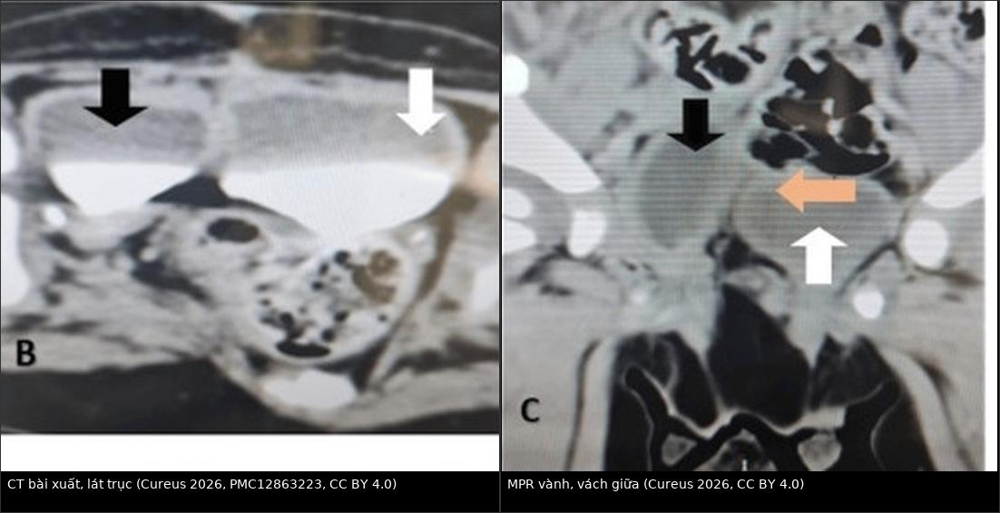
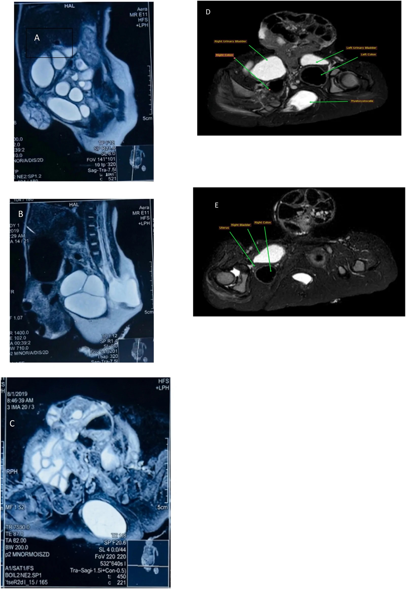
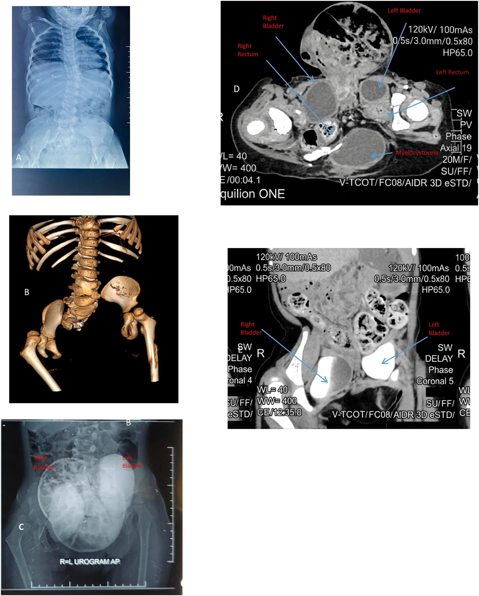
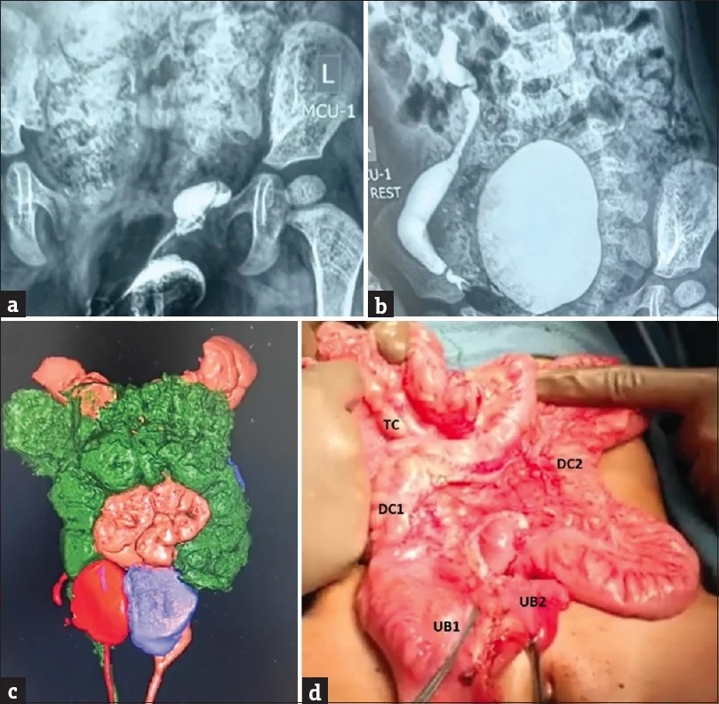

1749 — Hội chứng nhân đôi đuôi: hai bàng quang, hai đại tràng, một cột sống bất thường (caudal duplication syndrome)
Tags: pattern:nhan-doi-duoi pattern:hai-bang-quang pattern:hai-dai-trang pattern:di-tat-cot-song pattern:tuy-thap pattern:khuyet-xuong-cung vung:bung vung:bang-quang vung:truc-trang vung:khung-chau vung:cot-song vung:sinh-duc anatomy:cot-song-cung-cut protocol:MRI-cot-song protocol:CT-nieu-do protocol:MCUG protocol:SA-so-sinh score:VUR
Mức chắc chắn (certainty): tổng hợp y văn (literature synthesis) — 1 tổng quan hệ thống 17 bài / 23 bệnh nhân (Medicina 2020, PMCID PMC7759832), 1 ca nữ 6 tuổi có đủ X-quang – MRI – CT niệu đồ (Urol Case Rep 2026, PMCID PMC13634463), 1 ca nữ 15 tháng có MCUG + CT niệu đồ + dựng hình 3D (J Indian Assoc Pediatr Surg 2026, PMCID PMC13614799), 1 ca nam sơ sinh có CT niệu đồ (Cureus 2026, PMCID PMC12863223) và 1 tổng quan bàng quang đôi (Urol Case Rep 2024, PMCID PMC11033084). Không có ca do nhóm tự chụp; chỗ suy luận được ghi rõ.
Câu hỏi thực hành: bé gái 4 ngày tuổi, đẻ đủ tháng, được chuyển đến vì đi tiểu và đi phân từ HAI bộ lỗ tầng sinh môn cách nhau 6 cm, kèm khối thoát vị rốn 7 × 6 cm và khối gồ 2 × 2 × 5 cm vùng thắt lưng cùng. Sáu năm sau: không tự kiểm soát tiểu và phân, trào ngược niệu quản độ IV bên trái, xạ hình thận 70% / 30%. Gia đình hỏi: "Mổ một lần được không? Có tự đi tiểu được sau mổ không?" Bài chốt năm quyết định: (1) hội chứng nhân đôi đuôi (caudal duplication syndrome, CDS) = nhân đôi ruột sau + đường niệu–sinh dục + cột sống/tủy, tần suất ~1/100.000 trẻ sinh sống, nữ : nam 2 : 1; (2) chốt hình ảnh không phải "đếm hai bóng" mà là hai hệ thống riêng biệt, KHÔNG thông nhau (mỗi bàng quang nhận niệu quản cùng bên, có vách mô thật); (3) phần dễ bỏ sót nhất là cột sống – tủy: 60,86% (14/23) có dị tật đốt sống và ~một nửa có dị tật tủy trong loạt 23 ca; (4) thứ tự mổ theo chức năng (giải ép tủy, xử lý tắc ruột/rò) chứ không theo "chuẩn hoá giải phẫu"; (5) mổ nhiều thì hay một thì đều được — nhưng không có triệu chứng thì không mổ, đã có ca 31 tuổi sinh con khoẻ mạnh mà chưa từng tái tạo.
1. Tổng quan bệnh học – cơ chế hình ảnh (TẠI SAO)
1.1 Định nghĩa, dịch tễ và phôi thai
- Định nghĩa: CDS được Dominguez và cs. (1993) xác lập là một thực thể riêng: nhân đôi ruột sau (hindgut) + nhân đôi đường niệu–sinh dục dưới + dị tật tủy sống và đốt sống vùng cùng cụt, mức độ rất khác nhau giữa các ca (PMC7759832). Chữ "hội chứng" ở đây là bắt buộc: nhân đôi bàng quang đơn thuần đã có bài riêng (bài 1719) và không đồng nghĩa CDS.
- Tần suất: ~1/100.000 trẻ sinh sống (PMC13634463; PMC12863223); y văn tiếng Anh có ~100 ca (PMC13634463); tới 2020 chỉ có 23 ca nữ được báo cáo (PMC13614799) — con số này khác 23 bệnh nhân của tổng quan 2020 ở trên. Nữ : nam = 2 : 1 (PMC13634463).
- Lịch sử đọc phim: Ravitch (1953) gom 20 ca nhân đôi đại tràng–sinh dục–tiết niệu, trong đó 12 ca thoả tiêu chuẩn CDS (PMC13634463) — nghĩa là "nhân đôi đại tràng" thuần tuý là chuyện khác, phải tìm đủ ba trục.
- Phôi thai — 4 giả thuyết, chưa giả thuyết nào thắng (PMC13634463; PMC7759832):
- Tổn thương khối tế bào đuôi (caudal cell mass) — chủ yếu trung bì, vào ngày 23–25 của phôi: giải thích vì sao ruột sau, đường niệu–sinh dục và tủy cùng cụt cùng hỏng một lúc.
- Thuyết "véo" của Bremer ở tuần 6–7: ống tiêu hoá đặc hoá rồi tạo khoang không đều → nhân đôi.
- Dính ngoại bì–nội bì bất thường (đường nối ống ruột–da còn sót).
- Yếu tố gen: biểu hiện sai HOX và AXIN1 được nêu nhưng chưa chứng minh; không có gen gây bệnh xác định, không có yếu tố gia đình được ghi nhận (PMC13634463).
- Vì sao dị tật lại "đối xứng hai bên đường giữa": trục phôi đuôi tạo ra tấm thần kinh, dây sống (notochord), ruột sau và xoang nhớp cùng một thời điểm trong cùng một trường tín hiệu. Một tổn thương khu trú ở đây tạo ra bản sao thứ hai song song của tất cả các cấu trúc đó → bệnh cảnh luôn gồm 2 bộ tầng sinh môn + 2 cột sống cùng cụt bất thường, không chỉ 2 cái bàng quang.
1.2 TẠI SAO hình ảnh trông như vậy (vật lý + mô bệnh)
- Hai bàng quang "không thông": trên CT niệu đồ thì bài xuất (excretory phase), cản quang bài tiết qua niệu quản cùng bên rồi đổ vào khoang cùng bên. Vì không có lỗ thông, hai khoang ngấm thuốc độc lập, không trộn trong suốt thì bài xuất — đó là chốt phân biệt với một bàng quang có vách (bài 1719). Vách giữa là cơ trơn + niêm mạc thật — mô mềm, không phải dịch 0–10 HU → trên MRI là dải tín hiệu trung gian giữa hai túi nước tiểu T2 rất sáng (nước tiểu), trên siêu âm là dải echo giữa hai khoang trống âm.
- Hai đại tràng: sau khi bơm cản quang đường dưới, thuốc đi vào hai kênh riêng từ chỗ chia hình chữ Y; kênh "trội" (dominant) nhận phần lớn phân, kênh kia nhỏ hơn/teo. Trong ca PMC13614799: manh tràng, ruột thừa, đại tràng lên DUY NHẤT, đến đại tràng ngang thì chia Y thành hai đại tràng xuống; ca PMC13634463 thì hai đại tràng lên tách ngay từ manh tràng. Vị trí chỗ chia là dữ kiện mổ, không phải chi tiết vô nghĩa.
- Tủy sống: dịch não tủy T2 rất sáng, tủy là cấu trúc T2 trung gian; mỡ trong u mỡ/filum mỡ T1 rất sáng và TẮT tín hiệu trên T1 fat-sat — đây là lý do bắt buộc có T1 không fat-sat khi tìm u mỡ tủy. Myelocystocele = túi dịch não tủy thông với ống sống ra sau qua khuyết cung sau, thành túi có da/màng → khác nang cùng cụt (không thông ống sống).
- Xương cùng: trẻ nhỏ có nhiều sụn, ít calci → X-quang thẳng nghiêng đủ thấy khuyết cung sau, giảm sản/thiếu đốt cùng, dãn khớp mu; 3D-CT xương là bước trả lời "còn bao nhiêu xương cùng để neo khung chậu". Trong ca PMC13634463: chỉ có S1 và S2 phát triển một phần, L3–L4 dính hoàn toàn, L4–L5 dính một phần, đốt D9 hình nêm, dãn khớp mu 6 cm.
1.3 Ngưỡng định lượng và dịch tễ hình ảnh (loạt 23 ca)
| Dữ kiện | Số liệu | Nguồn |
|---|---|---|
| Dị tật đốt sống (dính đốt, nửa đốt sống) | 14/23 = 60,86% | PMC7759832 |
| Dị tật tủy (myelomeningocele, tủy thấp, u mỡ tủy, giãn ống trung tâm) | ~một nửa số ca | PMC7759832 |
| Hẹp hậu môn–trực tràng (ARM) MỘT bên | 7/23 = 30,43% | PMC7759832 |
| ARM HAI bên | 7/23 = 30,43% | PMC7759832 |
| Nhân đôi đại tràng lan tới đại tràng ngang | 5/23 = 21,73% | PMC7759832 |
| Nhân đôi đại tràng lan tới manh tràng | 4/23 = 17,39% | PMC7759832 |
| Nhân đôi đại tràng lan tới hồi tràng tận | 2/23 = 8,69% | PMC7759832 |
| Được đánh giá trong năm đầu | 19/23 = 82,60% | PMC7759832 |
| Có siêu âm thai, và chẩn đoán trước sinh | 2 ca, 0 ca | PMC7759832 |
| Nhân đôi bàng quang + niệu đạo | luôn ở mặt phẳng DỌC, gặp ở mọi ca trừ 2 ca nữ | PMC7759832 |
| Nhân đôi sinh dục ngoài | nam 5/7; nữ toàn bộ | PMC7759832 |
- Con số "cột sống 15%" KHÔNG mâu thuẫn: trong 40 ca bàng quang đôi đơn thuần của Kossow, 15% có spina bifida/meningocele (dẫn lại ở bài 1719); còn trong CDS — tức là đã có nhân đôi ruột sau — tỉ lệ dị tật đốt sống lên 60,86% (PMC7759832). Càng nhiều trục bị nhân đôi, cột sống càng chắc chắn bất thường.
- Tiên lượng kiểm soát tiểu/phân KHÔNG phụ thuộc số tạng được tái tạo, mà phụ thuộc mức tổn thương tủy–xương cùng: ca PMC13634463 tái tạo giải phẫu thành công nhưng vẫn không kiểm soát, đúng như dự báo của tủy thấp L4 + xương cùng gần như mất; ca PMC13614799 tuy có lipomeningocele nhưng không có tủy thấp rõ và đi tiểu tốt ở 6 tháng (thể tích tiểu tối đa 90 mL).
2. Mẫu hình + chẩn đoán phân biệt theo vị trí (Gamut)
CDS không đến phòng chụp với một "dấu hiệu" mà với một trong bốn mẫu hình. Nhận đúng mẫu hình quyết định chụp gì tiếp theo.
- Mẫu hình A — "hai bộ tầng sinh môn" (mẫu hình chỉ điểm): hai lỗ hậu môn, hai lỗ tiểu, hai bộ phận sinh dục ngoài cách nhau vài cm. Đây là lý do 82,60% được phát hiện trong năm đầu. Gamut: CDS, nhân đôi bàng quang/niệu đạo/sinh dục đơn thuần (bài 1719), phức hợp lỗ tiểu trên – lộ bàng quang (epispadias–exstrophy), dị tật hậu môn–trực tràng (ARM) thể phức tạp (bài 3075).
- Mẫu hình B — "hai bàng quang trên CT/MRI": gamut: CDS (kèm ruột sau + cột sống), bàng quang đôi hoàn toàn/không hoàn toàn (1719), túi thừa Hutch hai bên ("Mickey Mouse" — hai túi ngoài thành, bài 1706), bàng quang đôi trong lộ bàng quang/nhớp lộ.
- Mẫu hình C — "khối nang vùng cùng cụt + dị tật hậu môn": gamut: tam chứng Currarino (xương cùng hình liềm + khối trước cùng + ARM), CDS, u quái cùng cụt, màng não tủy trước cùng (anterior sacral meningocele), nang nhân đôi ruột trước cùng.
- Mẫu hình D — "hai kênh đại tràng": gamut: CDS, nang/ống nhân đôi ruột (enteric duplication cyst) đơn thuần, dị tật xoay ruột, túi thừa Meckel khổng lồ.
- Checklist 4 trục (bắt buộc ghi trong kết luận, kể cả khi chỉ thấy 1 trục):
- SD – Sinh dục: số bộ phận sinh dục ngoài, tử cung/âm đạo, tinh hoàn.
- TN – Tiết niệu: số bàng quang, số niệu đạo, niệu quản đổ vào đâu, trào ngược, chức năng từng thận.
- TH – Tiêu hoá: chỗ chia đại tràng, vị trí hậu môn, kênh nào là kênh trội, có rò bàng quang–ruột.
- CS – Cột sống/tủy: đốt sống, xương cùng, vị trí tủy tận cùng, mỡ/filum, myelocystocele.
- Mnemonic "2-3-4": 2 bộ tầng sinh môn, 3 trục nhân đôi (ruột–niệu dục–cột sống), 4 nhóm chụp (siêu âm, X-quang, CT niệu đồ, MRI cột sống).
3. Bảng so sánh phân biệt (ma trận đối chiếu)
| Thực thể (entity) | Hình ảnh điển hình | Chốt vào (rule-in) | Chốt loại (rule-out) | Gợi ý xác nhận |
|---|---|---|---|---|
| CDS | Hai bàng quang không thông (mỗi bên nhận niệu quản cùng bên) + hai kênh đại tràng + bất thường xương cùng/tủy | Đủ 3 trục: ruột sau + niệu–sinh dục dưới + cột sống/tủy | Chỉ có 1 trục (ví dụ chỉ bàng quang đôi) → không gọi CDS | CT niệu đồ thì bài xuất + MRI tủy + X-quang cùng cụt |
| Bàng quang đôi đơn thuần (bài 1719) | Vách trong lòng chia 2 nửa; hoàn toàn = 2 niệu đạo, không hoàn toàn = 1 niệu đạo | Vách trong lòng + hai lỗ niệu đạo riêng | Có nhân đôi đại tràng hoặc tủy thấp kèm theo → chuyển sang CDS | VCUG đặt catheter cả hai lỗ, CT/MRI niệu |
| Túi thừa Hutch hai bên (bài 1706) | Hai "tai" ngoài thành bàng quang, cổ túi hẹp | Túi phình ra NGOÀI đường viền bàng quang | Vách nằm TRONG lòng → không phải túi thừa | VCUG thì đi tiểu, siêu âm |
| Tam chứng Currarino | Xương cùng hình liềm, khối trước cùng (màng não tủy trước cùng/u mỡ/u quái), ARM | Đủ bộ ba + khối trước cùng thông ống sống | Có nhân đôi bàng quang/đại tràng → CDS chứ không phải Currarino đơn thuần | MRI cùng cụt + X-quang cùng cụt; gen MNX1 nếu gia đình |
| Màng não tủy trước cùng | Khối nang T2 sáng, cổ thông với ống sống, xương cùng khuyết | Thấy cổ thông ống sống trên MRI | Không thông ống sống → nang nhân đôi ruột/u quái | MRI T2 sagittal + CT xương |
| Nang nhân đôi ruột | Cấu trúc dạng ống/nang, thành có lớp cơ, dính vào ruột | Thành cơ + niêm mạc ruột, đồng vận động với ruột | Hai kênh có hậu môn riêng + xương cùng bất thường → CDS | Siêu âm, CT/MRI bụng |
| U quái cùng cụt | Khối hỗn hợp đặc–nang, có calci/mỡ, đẩy trực tràng | Mỡ + calci + không thông ống sống | Không có mỡ/calci, có 2 bàng quang → không phải u quái | MRI + AFP |
| Lộ bàng quang – lỗ tiểu trên (exstrophy–epispadias) | Bàng quang hở ra thành bụng, dãn khớp mu rộng, dương vật ngắn/vẹo | Thành bụng trước khuyết + bàng quang lộ | Thành bụng kín, bàng quang nằm trong khung chậu → không phải exstrophy | Lâm sàng + X-quang khung chậu |
| Dị tật hậu môn–trực tràng phức tạp (bài 3075) | Một hậu môn lạc chỗ/rò, không có 2 bộ tầng sinh môn | Một lỗ hậu môn duy nhất | Hai lỗ hậu môn + hai bàng quang → CDS | Khám dưới gây mê, MRI khung chậu |

Trái: lát trục — hai khoang bàng quang ngấm thuốc riêng rẽ (mũi tên đen và trắng), vách mô mềm ở giữa. Phải: MPR vành — vách giữa (mũi tên cam) tách hai bàng quang; mỗi bên nhận niệu quản cùng bên. Ảnh cắt từ Hình 1 (panel B, C) của Cureus 2026, PMCID PMC12863223, CC BY 4.0; ghép letterbox bằngtools/make_composite.py.
Ba dấu hiệu "chốt" đọc nhanh trên một lát cắt
- Dấu vách trong lòng (intravesical septum): vách liên tục, có tín hiệu mô, không mất khi đổi thì → bàng quang đôi thật.
- Dấu "hai niệu quản – hai bàng quang cùng bên": mỗi niệu quản đổ vào khoang cùng phía — trên CT bài xuất muộn, không có dòng thuốc chéo sang bên kia.
- Dấu "cột sống không bao giờ bình thường": nếu bạn đã thấy 2 bàng quang + 2 đại tràng mà chưa chụp cột sống – tủy, kết luận còn thiếu một nửa chẩn đoán.
4. Protocol chụp + phân độ, thang điểm
4.1 Trước sinh và 72 giờ đầu
- Siêu âm thai: có thể thấy hai bàng quang, hai trực tràng, khối cùng cụt, dãn khớp mu — nhưng trong loạt 23 ca chỉ 2 ca có siêu âm thai và KHÔNG ca nào được chẩn đoán trước sinh (PMC7759832). Vì vậy không có "hình ảnh trước sinh bình thường" nào loại trừ CDS.
- Siêu âm sau sinh (đầu tay): bụng + cột sống qua thóp/lưng (thấy tủy thấp, mỡ filum, myelocystocele) + khung chậu. Siêu âm tủy chỉ còn giá trị trong ~3–6 tháng đầu, trước khi cung sau cốt hoá — sau mốc này bắt buộc MRI.
- X-quang cột sống cùng cụt thẳng + nghiêng: khuyết cung sau, số đốt cùng còn lại, dãn khớp mu. Trong ca PMC13634463 phim bụng đứng đã đủ thấy khối thoát vị rốn và bất thường đốt sống trước khi làm MRI.
4.2 CT niệu đồ (CT urography) — "bài thi chính" của CDS
- Chỉ định: đã xác định hoặc nghi nhân đôi đường niệu–sinh dục; cần bản đồ niệu quản – bàng quang trước mổ.
- Kỹ thuật: lát ≤ 1 mm, tái tạo MPR vành + sagittal + dựng hình 3D; cản quang tĩnh mạch 1,5–2 mL/kg (tối đa theo cân nặng); thì bài xuất 5–15 phút sau tiêm (nhũ nhi có thể cần 20–30 phút vì độ lọc cầu thận còn thấp).
- Đọc theo thứ tự: (1) số bàng quang và vách; (2) niệu quản đổ vào khoang nào; (3) thận hai bên (số đơn vị, ứ nước); (4) chỗ chia đại tràng; (5) xương cùng/khung chậu trên cửa sổ xương.
- Liều: tuân thủ ALARA; ghi CTDIvol và DLP, đối chiếu DRL theo tuổi (bài 937 về SSDE/DRL ở trẻ).
4.3 MRI cột sống – khung chậu (không thể bỏ)
- Chuỗi bắt buộc: T2 sagittal toàn cột sống, T1 sagittal không fat-sat, T1 fat-sat, T2 axial qua chỗ tận cùng tủy; T2 axial khung chậu để đếm bàng quang/trực tràng/tử cung. Lát 3 mm, FOV phủ từ hành não tới xương cùng.
- Ngưỡng đọc (thông lệ, không phải số của loạt CDS): tủy tận cùng bình thường ở ngang hoặc trên đĩa L2–L3; tủy thấp khi tận cùng dưới L2–L3 sau 3 tháng tuổi; filum ≥ 2 mm hoặc có mỡ trong filum = nguy cơ dính tủy; myelocystocele = túi dịch thông ống sống.
- TẠI SAO phải T1 không fat-sat: mỡ T1 sáng, nhưng trên T1 fat-sat mỡ TỐI — nếu chỉ có fat-sat, u mỡ/filum mỡ biến mất và bạn kết luận "không có mỡ", một lỗi kinh điển.
4.4 Phân độ dùng trong báo cáo
- Bàng quang đôi — Abrahamson: hoàn toàn = vách cơ + hai niệu đạo riêng; không hoàn toàn = vách + một niệu đạo chung; thêm mặt phẳng dọc (thường gặp) hay vành (PMC11033084; bài 1719).
- Trào ngược niệu quản — độ I–V (International Reflux Study): độ IV = niệu quản + bể thận giãn, gấp khúc, còn nhú nhện; độ V = mất nhú. Ca PMC13634463 có độ IV bên trái và chức năng thận 70% / 30% trên xạ hình.
- Hậu môn–trực tràng — Krickenbeck (bài 3075) để mô tả thể và kết cục đại tiện.
- Rò bàng quang–ruột: chẩn đoán bằng soi bàng quang + bơm thuốc, không bằng CT — ca Cureus 2026 có rò bàng quang–đại tràng không thấy trên hình ảnh ban đầu, chỉ phát hiện khi soi (PMC12863223).
4.5 Thuật toán một lượt: mổ gì trước?
flowchart TD
A[Sơ sinh có 2 bộ tầng sinh môn hoặc 2 bàng quang] --> B[Siêu âm bụng và cột sống, X-quang cùng cụt]
B --> C[MRI cột sống và CT niệu đồ lát mỏng]
C --> D{Có chèn ép tủy, tủy thấp, myelocystocele rõ hoặc yếu chi?}
D -->|Có| E[Giải ép tủy hoặc đóng myelocystocele TRƯỚC]
D -->|Không| F{Có tắc ruột, rò bàng quang–ruột, thoát vị rốn vỡ?}
F -->|Có| G[Mổ bụng cấp cứu: xử lý rò hoặc tắc, vá thành bụng]
F -->|Không| H{Kiểm soát tiểu và phân được không?}
H -->|Có| I[Không mổ: theo dõi định kỳ 6–12 tháng]
H -->|Không| J[Đánh giá chức năng: siêu âm sau tiểu, MCUG, niệu động học]
J --> K{Có một bên trội rõ trên chẩn đoán chức năng?}
K -->|Có| L[Cắt bên không chức năng, giữ bên trội]
K -->|Không| M[Thông vách hoặc hợp nhất bàng quang, bảo tồn cơ thắt]
E --> N[Thì 2: đường tiêu hóa và tầng sinh môn]
G --> N
L --> N
M --> N
I --> O[Theo dõi dài hạn: bàng quang, đại tiện, cột sống, sinh sản]
N --> O
- Nguyên tắc "chức năng trước giải phẫu": ưu tiên giải ép tủy và xử lý rò/tắc vì đây là thứ không thể phục hồi nếu muộn; tạo hình sinh dục và "chuẩn hoá hình dáng" có thể hoãn tới tuổi dậy thì để bệnh nhân tự quyết (PMC12863223; PMC7759832).
- Không triệu chứng thì không mổ: y văn đã ghi nhận ca 31 tuổi sinh con khoẻ mạnh bằng mổ lấy thai mà chưa từng tái tạo, cùng nhiều ca nữ trưởng thành chỉ được phát hiện khi mang thai (tuổi 22–39) (PMC13634463; PMC7759832).
5. Biến thể bình thường và cạm bẫy
- Bàng quang đôi KHÔNG hoàn toàn (chỉ có vách) có thể không cần mổ nếu hai nửa dẫn lưu tốt, không trào ngược, không nhiễm trùng — đừng "sửa cho đẹp".
- Nhầm "hai túi thừa" với "hai bàng quang": túi thừa Hutch nằm ngoài đường viền, cổ hẹp; bàng quang đôi có vách trong lòng. Cắt nhầm túi thừa trong CDS = bỏ mất một nửa bàng quang thật (bài 1706, 1719).
- Bỏ sót rò bàng quang–ruột: hình ảnh có thể âm tính; bệnh nhân đi tiểu ra phân/hơi, hoặc nhiễm trùng tiểu tái diễn. Chốt bằng soi bàng quang + bơm thuốc, không bằng CT (PMC12863223).
- Siêu âm tủy sau 6 tháng: cung sau cốt hoá → âm giả. Trẻ > 6 tháng hoặc đã có bất thường xương cùng: MRI, không tranh luận.
- Chỉ đọc T2 mà bỏ T1: mỡ tủy/filum mỡ T1 sáng, T2 cũng sáng → dễ gọi là "dịch"; và ngược lại T1 fat-sat làm mỡ tối → dễ kết luận "không mỡ". Luôn đọc cả hai.
- Thoả mãn tìm kiếm (satisfaction of search): thấy hai bộ phận sinh dục là "đủ chẩn đoán" → bỏ tủy thấp, bỏ khuyết xương cùng, bỏ dị tật tim/thành bụng. Trong CDS, dị tật ngoài vùng đuôi (thoát vị rốn, tim bẩm sinh, xoay ruột, Meckel, teo tá tràng) được ghi nhận với tỉ lệ không hằng định — phải khám toàn thân.
- "Kênh trội" không đoán bằng mắt: kênh nào lớn hơn trên hình chưa chắc là kênh có chức năng tốt hơn — cần đối chiếu nội soi, xạ hình, niệu động học trước khi cắt (PMC13614799; PMC13634463).
- Dãn khớp mu: gặp ở cả exstrophy và CDS; một mình dãn khớp mu không định chẩn đoán, phải đọc cùng bàng quang và xương cùng.
6. Tự lượng giá — Blind Quiz
Ca 1 — Nam sơ sinh, hai dương vật, hai hậu môn, đi tiểu từ cả hai.
- Gợi ý lâm sàng: đủ tháng, không dị tật thấy trước sinh; khám thấy hai dương vật, bìu đôi, hai lỗ hậu môn.
- Câu hỏi: Hai khoang ngấm thuốc là gì? Chúng có thông nhau không — dựa vào dấu hiệu nào? Còn phải chụp gì trước khi mổ?
Bấm để hiện đáp án (findings + chẩn đoán)
- Dấu hiệu: hai khoang bàng quang ngấm thuốc độc lập, vách mô mềm ở giữa; mỗi bên nhận niệu quản cùng bên; không có dòng thuốc chéo trong thì bài xuất.
- Chẩn đoán: hội chứng nhân đôi đuôi — bàng quang đôi hoàn toàn (Abrahamson) + nhân đôi đại tràng + tủy thấp; ca này còn rò bàng quang–đại tràng chỉ phát hiện khi soi bàng quang.
- Vì sao: hai khoang không thông nên cản quang bài tiết qua hai niệu quản không trộn — đó là chốt phân biệt với bàng quang có vách.
- Việc còn lại: MRI cột sống (tủy thấp, mỡ filum), siêu âm tim, soi bàng quang; thứ tự mổ: giải ép tủy → xử lý rò/đại tràng → tạo hình niệu–dục.
- Nguồn ảnh: Cureus 2026, PMCID PMC12863223 (Hình 1, panel B–C), CC BY 4.0; cắt và ghép letterbox.
Ca 2 — Bé gái 6 tuổi, thoát vị rốn 7 × 6 cm lúc sinh, hai bộ lỗ tầng sinh môn cách 6 cm, gồ vùng thắt lưng cùng.

- Gợi ý: hiện không kiểm soát tiểu/phân, đi lại cần hỗ trợ; siêu âm thận trái ứ nước.
- Câu hỏi: Có mấy bàng quang, mấy đại tràng? Tủy tận cùng ở đâu? Dấu hiệu nào giải thích không kiểm soát được dù đã tái tạo?
Bấm để hiện đáp án (findings + chẩn đoán)
- Dấu hiệu: hai bàng quang cạnh nhau, hai đại tràng, túi dịch thông ống sống sau (myelocystocele) ở vùng thắt lưng cùng, tủy tận cùng thấp (L4); xương cùng chỉ còn S1 + một phần S2, dãn khớp mu 6 cm.
- Chẩn đoán: CDS với tủy thấp + myelocystocele + thiểu sản xương cùng; bàng quang đôi hoàn toàn, mỗi bên một niệu quản cùng bên; trào ngược độ IV trái, chức năng thận 70% / 30%.
- Vì sao không kiểm soát: kiểm soát tiểu/phân phụ thuộc tủy và xương cùng, không phụ thuộc việc "nối hai bàng quang cho đẹp". Đây là điểm phải nói trước mổ với gia đình.
- Việc còn lại: niệu động học, cân nhắc bàng quang tăng cường / Mitrofanoff nếu dung tích–áp lực không đạt; theo dõi bàng quang thần kinh, táo bón, và chuyển tuyến phụ khoa khi trưởng thành.
- Nguồn ảnh: Urol Case Rep 2026, PMCID PMC13634463 (Hình 2), CC BY-NC-ND 4.0 — nguyên bản.
Ca 3 — Cùng bệnh nhi ở Ca 2, phim trước mổ: bụng chướng, gồ vùng thắt lưng cùng, đi lại cần hỗ trợ.

- Gợi ý: đã biết có hai bàng quang và hai đại tràng trên MRI; cần trả lời còn bao nhiêu xương cùng và khung chậu có vững để lên kế hoạch mổ.
- Câu hỏi: Xương cùng còn mấy đốt? Có dấu hiệu nào của thiểu sản xương cùng và dãn khớp mu? Niệu đồ ngược dòng cho thấy gì?
Bấm để hiện đáp án (findings + chẩn đoán)
- Dấu hiệu: xương cùng gần như mất (chỉ còn S1 và một phần S2); L3–L4 dính hoàn toàn, L4–L5 dính một phần; đốt D9 hình nêm gây vẹo; dãn khớp mu 6 cm, khung chậu hẹp, đầu trên xương đùi phải lệch lên trên–ra ngoài; niệu đồ: hai bàng quang đổ đầy riêng, trào ngược độ IV bên trái.
- Chẩn đoán: CDS với thiểu sản xương cùng nặng + dãn khớp mu + bất thường đốt sống thắt lưng; đi kèm tủy thấp L4 + myelocystocele tận (đã thấy trên MRI ở Ca 2).
- Vì sao 3D-CT xương quan trọng: nó trả lời khung chậu còn đủ xương để neo hay không — quyết định có làm tạo hình khung chậu hay chấp nhận dáng đi và kiểm soát tiểu kém; đây cũng là dữ kiện tư vấn tiên lượng, không phải hình minh hoạ.
- Nguồn ảnh: Urol Case Rep 2026, PMCID PMC13634463 (Hình 3), CC BY-NC-ND 4.0 — nguyên bản.
Ca 4 — Bé gái 15 tháng, hai bộ phận sinh dục ngoài, đi cầu qua hậu môn lạc chỗ bên trái.

- Gợi ý: bàng quang trái không đặt được catheter; bụng chướng nhẹ, không nôn; đã xác định nhân đôi tầng sinh môn.
- Câu hỏi: Trên dựng hình 3D có mấy khối đại tràng, mấy khối bàng quang? Chỗ chia đại tràng ở đâu? MCUG cho biết gì mà CT không cho?
Bấm để hiện đáp án (findings + chẩn đoán)
- Dấu hiệu: dựng hình 3D tách hai hệ đại tràng (DC1, DC2) và hai bàng quang (UB1, UB2); manh tràng – ruột thừa – đại tràng lên DUY NHẤT, đến đại tràng ngang (TC) chia hình Y thành hai đại tràng xuống; MCUG: xoang niệu dục trái teo, túi cùng không đặt được catheter, xương cùng chẻ đôi; bên phải: bàng quang hình dạng bình thường, trào ngược niệu quản độ 4.
- Chẩn đoán: CDS thể bàng quang đôi + đại tràng đôi, bên trái không chức năng về niệu → cắt bàng quang trái + niệu quản trái nối sang phải, cắt đại tràng trái, kéo đại tràng phải xuống làm hậu môn mới, tạo hình tầng sinh môn một thì.
- Vì sao cần cả hai: CT/3D cho giải phẫu và số mạch nuôi từng kênh; MCUG cho chức năng và trào ngược — hai câu hỏi khác nhau, không thay thế nhau.
- Nguồn ảnh: J Indian Assoc Pediatr Surg 2026, PMCID PMC13614799 (Hình 2), CC BY-NC-ND 4.0 — nguyên bản.
Bài liên quan chéo
- 600 – Tổng quan Hệ Nhi khoa (bảng DDx bắt buộc)
- 1719 – Bàng quang đôi, vách bàng quang & nang niệu rốn (nhân đôi MỘT trục)
- 1706 – Túi thừa bàng quang & hội chứng "Mickey Mouse" (hai "tai" NGOÀI thành)
- 3075 – Dị tật hậu môn–trực tràng ở sơ sinh (ARM, phân loại và thì mổ)
- 635 – Dị tật tiết niệu nhi: SFU, VUR, PUV (phân độ trào ngược)
- 691 – Soi bàng quang và soi quanh catheter ở trẻ (chốt rò bàng quang–ruột)
- 937 – Liều CT ở trẻ: SSDE & DRL (ALARA khi chụp lặp lại)
Ảnh
- Tên file theo quy ước
NNN_slug_Modality_SourceID.jpg; nguồn + giấy phép từng ảnh trongimages/CREDITS.md. - Không cắt/ghép ảnh CC BY-NC-ND (PMC13634463, PMC13614799) — giữ nguyên bản, kể cả nhãn tiếng Anh trên hình.
- Ảnh CC BY 4.0 (PMC12863223) được cắt hai panel CT và ghép letterbox bằng
tools/make_composite.py, có ghi rõ phái sinh.
Không dùng để chẩn đoán độc lập khi chưa có người hướng dẫn.